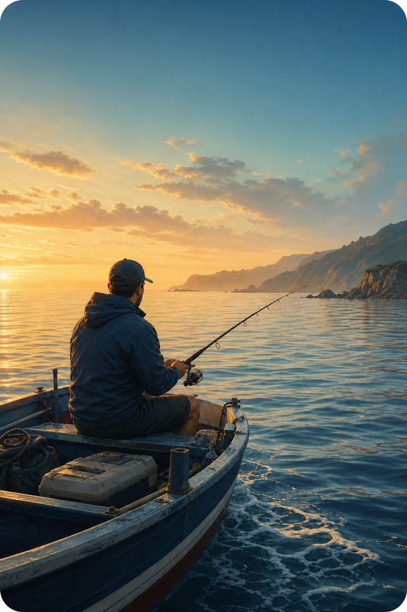

Regista a jornada
Data, local, tipo de pesca e aquilo que realmente importa naquele dia.
O teu diário de pesca
Regista o dia, guarda as capturas e descobre os padrões que tornam a tua pesca verdadeiramente tua.

A tua memória no mar
O acesso ao PescaLog é reservado a utilizadores convidados.
Simples por natureza
Data, local, tipo de pesca e aquilo que realmente importa naquele dia.
Regista apenas quando existem. Uma jornada sem capturas continua a ter valor.
Compara espécies, peso e fases da lua ao longo do teu histórico.
Usa o email associado ao teu convite.
Ainda não tens acesso? O administrador deve enviar-te um convite.
Enviamos uma ligação temporária para entrares sem palavra-passe.
i Por segurança, mostramos a mesma mensagem mesmo que o email não esteja associado a uma conta.
Verifica o teu email
Se existir uma conta associada a pescador@exemplo.pt, receberás uma mensagem dentro de alguns instantes.
Abre o email do PescaLog.
2Clica em Entrar no PescaLog.
Convite PescaLog
Foste convidado para guardar as tuas Jornadas de Pesca. Confirma o teu nome e escolhe uma palavra-passe para concluir o registo.
i Este convite é pessoal e tem validade limitada.
Ligação indisponível
Pode ter expirado, sido utilizada ou deixado de estar disponível. Pede uma nova ligação para continuar.
Domingo, 19 de julho
Aqui está o resumo das tuas jornadas.
em 24 jornadas
42 exemplares registados
31% das tuas capturas
O registo ficou disponível no teu histórico.
A tua memória
Pesquisa e revisita todos os teus dias de pesca.
MELHOR FASEQuarto crescente31% das capturas
Mar calmo durante a manhã, corrente moderada depois das 11h.
Início de jornada com vento fraco de noroeste.
Dia difícil, água muito mexida e corrente forte.
Jornada de pesca
Dois exemplares maiores capturados perto do final da manhã.
Registo de exemplar específico.
Sem observações.
Controlo da plataforma
Estado dos acessos, tenants e catálogos do PescaLog.
Todos operacionais
32 ativos · 4 inativos
1 expira nas próximas 24h
6 tipos de pesca
| UTILIZADOR | TENANT | ESTADO | ÚLTIMO ACESSO | |
|---|---|---|---|---|
| MS Manuel Silvamanuel@exemplo.pt | Maré Alta | Ativo | Hoje, 09:42 | ••• |
| AC Ana Costaana@exemplo.pt | Pesca Sul | Convidado | — | ••• |
| JR João Reisjoao@exemplo.pt | Maré Alta | Ativo | Ontem, 18:21 | ••• |